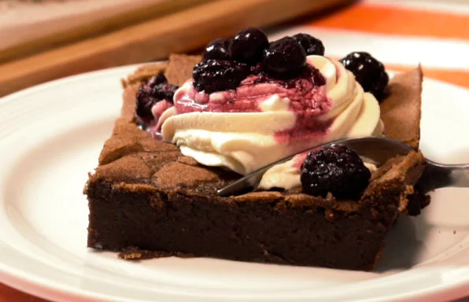

Ingredientes
- 245 g de manteca
- 350 g de chocolate negro
- 5 huevos
- 210 g de azúcar
Preparación:
- - Precalentar el horno a 120°.
- - Untar un molde de unos 22cm con manteca (bastante) y forrar el fondo con papel vegetal.
- - Poner a baño maría un bowl con el chocolate y la manteca, y derretir. Mezclar y dejar enfriar un poco.
- - Hervir 140g del azúcar con 100cc de agua durante unos 2 minutos, de forma que se haga un almíbar suave.
- - Añadir a la mezcla de chocolate.
- - Con una batidora eléctrica, batir los huevos con 70g del azúcar hasta que cuadriplique su volumen (unos 5 minutos).
- - Incorporar la mezcla de chocolate a los huevos con azúcar y remover hasta integrar bien. Verter en el molde.
- - Hornear a baño maría por espacio de una hora y dejar enfriar en el mismo baño maría. Luego llevar a enfriar a la heladera.
- - Servir con crema chantilly y algunas frutos rojos encima.
